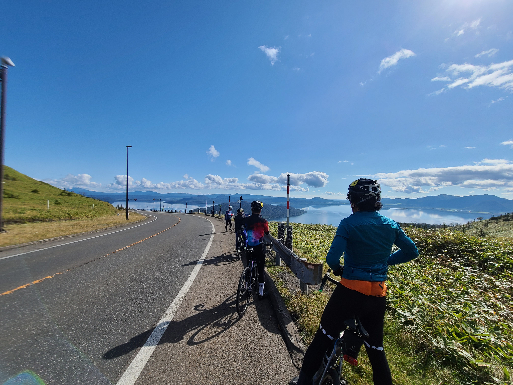
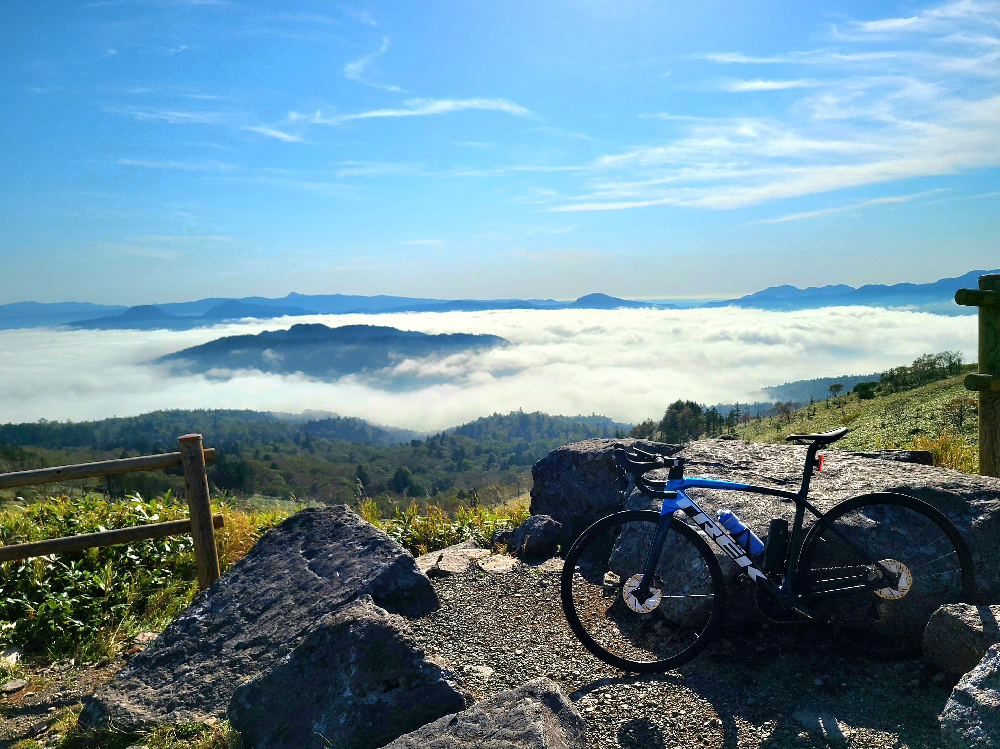

美幌峠ルート


２つの山岳ポイントを経由するヒルクライマー（坂バカ）向けのルートです。
北海道有数の絶景スポットである美幌峠からは、国内最大のカルデラ湖である屈斜路湖の圧倒的な景色を堪能できます。
また、２つ目の山岳地点である藻琴山からは、阿寒や知床の山々、眼下には屈斜路湖の絶景があなたをお待ちしています。
- ・総距離：１４８．６ｋｍ
- ・獲得標高：１，５１１ｍ
- ・ルートのデータは、 こちらからダウンロードできます